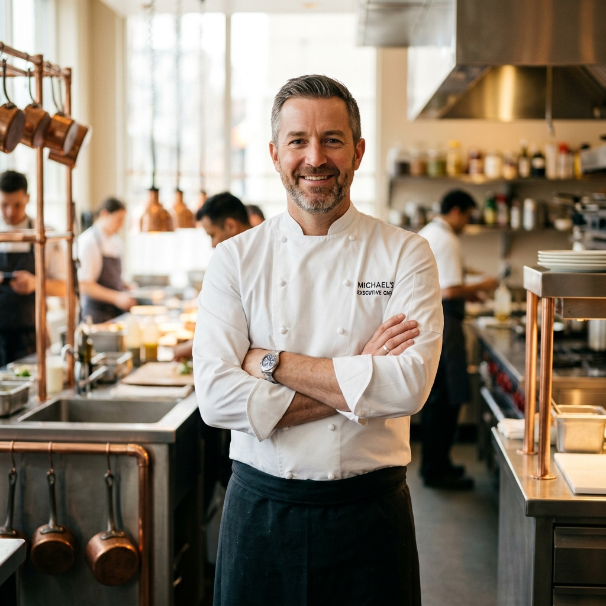

From the Kitchen
to Your Table
"Every dish I prepare carries a piece of the people who shaped me — my mother, my teachers, the families who trusted me with their most sacred celebrations."
John Caplan grew up in a household where food was more than sustenance — it was identity, love, and tradition. From his grandmother's brisket to elaborate holiday spreads, the kitchen was always the center of family life. This upbringing ignited a lifelong devotion to the culinary arts that would define his career.
After formal culinary training and years honing his craft in some of New York's finest kitchens, John turned his focus to a calling that felt deeply personal: celebrating the milestone moments of Jewish life through extraordinary food. He founded the Wandering Chef to bring the same level of care, creativity, and precision he saw in top restaurants to the catered events that matter most.
Today, John and his team are renowned throughout the New York metropolitan area for producing some of the most beautiful and delicious kosher catering seen at Bris ceremonies, Bar and Bat Mitzvahs, Shabbat dinners, holiday gatherings, and weddings. His philosophy is simple: exceptional ingredients, thoughtful preparation, and food that tells a story.
The Wandering Chef's Creed
Ready to Plan Your Event?
Let's connect and create a culinary experience your guests will talk about for years.
Get in Touch